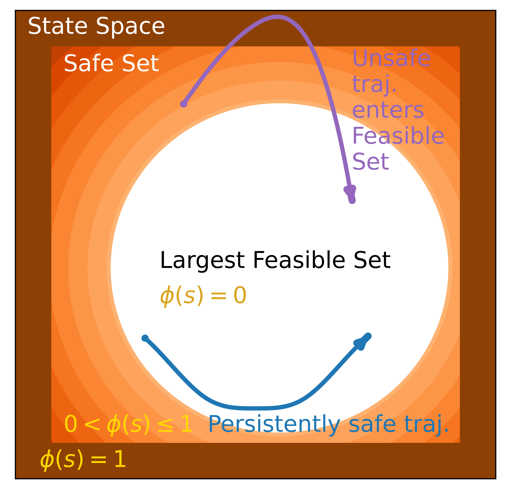
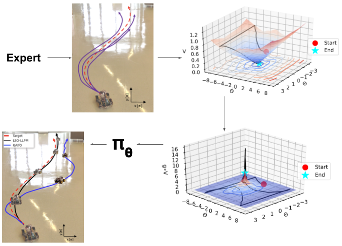
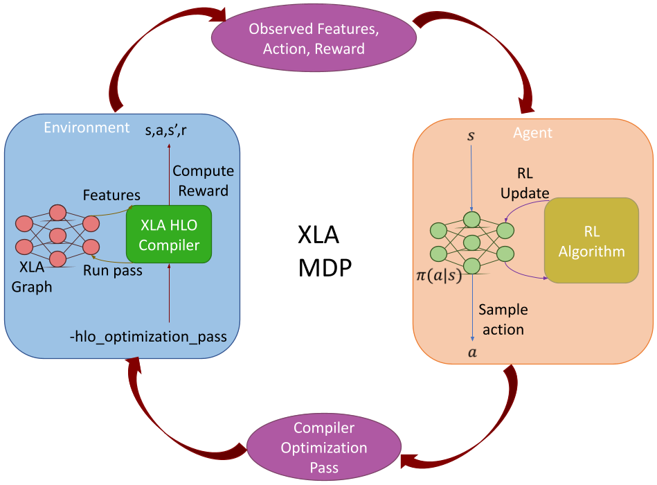
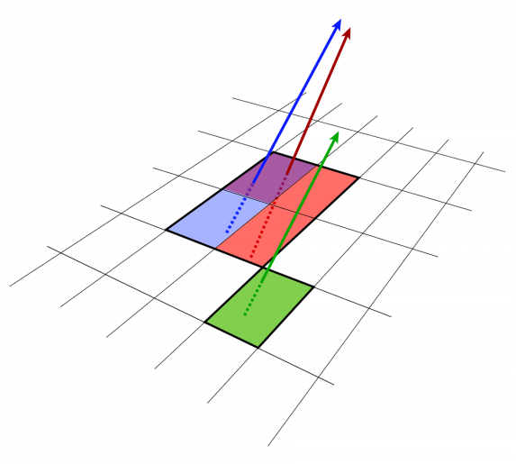

|

|
Iterative Reachability Estimation for Safe Reinforcement Learning
Milan Ganai, Zheng Gong, Chenning Yu, Sylvia Herbert, and Sicun Gao
NeurIPS 2023 (Neural Information Processing Systems)
paper |
code |
website
Hamilton-Jacobi reachability estimation for model-free safe RL in deterministic and stochastic environments with safety guarantees and convergence analysis. Tasks include lidar-based observations, dynamic obstacles, and multiple hard and soft constraints.
|
|

|
Learning Stabilization Control from Observations by Learning Lyapunov-like Proxy Models
Milan Ganai, Chiaki Hirayama, Ya-Chien Chang, and Sicun Gao
ICRA 2023 (IEEE International Conference on Robotics and Automation)
paper |
website |
IEEE
Learning Lyapunov-like models from offline, observation-only, expert data to solve stabilization control tasks online. Deployed in hardware for robustness testing.
|
|

|
Target-independent XLA optimization using Reinforcement Learning
Milan Ganai, Haichen Li, Theodore Enns, Yida Wang, and Randy Huang
ML for Systems @ NeurIPS 2022 (Workshop on ML for Systems in Neural Information Processing Systems)
paper |
website
Reinforcement Learning to determine XLA compiler optimization pass ordering to reduce GPT-2, BERT, and ResNet graph sizes.
|
|

|
Identifying Merged Tracks in Dense Environments with Machine Learning
Patrick McCormack, Milan Ganai, Ben Nachman, and Maurice Garcia-Sciveres
CTD/WIT 2019 (Connecting the Dots / Workshop on Intelligent Trackers)
paper
Building boosted decision trees to classify reconstructed particle tracks as merged in high density particle physics environments.
|
|